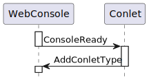
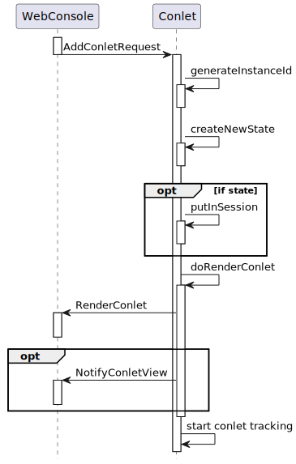

- java.lang.Object
-
- org.jgrapes.core.internal.ComponentVertex
-
- org.jgrapes.core.Component
-
- org.jgrapes.webconsole.base.AbstractConlet<S>
-
- Type Parameters:
S- the type of the web console component state information
- All Implemented Interfaces:
- Iterable<org.jgrapes.core.ComponentType>, org.jgrapes.core.Channel, org.jgrapes.core.ComponentType, org.jgrapes.core.Eligible, org.jgrapes.core.Manager
- Direct Known Subclasses:
- FreeMarkerConlet
public abstract class AbstractConlet<S extends Serializable> extends org.jgrapes.core.Component
Provides a base class for implementing web console components. In addition to translating events to invocations of abstract methods, this class manages the state information of a web console component instance.
Event handling
The following diagrams show the events exchanged between the
WebConsoleand a web console component from the web console component’s perspective. If applicable, they also show how the events are translated by theAbstractConletto invocations of the abstract methods that have to be implemented by the derived class (the web console component component that provides a specific web console component type).ConsoleReady

From the web console’s page point of view, a web console component consists of CSS and JavaScript that is added to the console page by
AddConletTypeevents and HTML that is provided byRenderConletevents (see below). These events must therefore be generated by a web console component. With respect to the firing of the initialAddConletType, theAbstractConletdoes not provide any support. The handler for theConsoleReadymust be implemented by the derived class itself.AddConletRequest

The
AddConletRequestindicates that a new web console component instance of a given type should be added to the page. TheAbstractConletchecks the type requested, and if it matches, invokesdoAddConlet. The derived class generates a new unique web console component id (optionally usinggenerateConletId) and a state (model) for the instance. The derived class callsputInSessionto make the state known to theAbstractConlet. Eventually, it fires theRenderConletevent and returns the new web console component id. TheRenderConletevent delivers the HTML that represents the web console component on the page to the console session. The web console component state may be used to generate HTML that represents the state. Alternatively, state independent HTML may be delivered followed by aNotifyConletViewevent that updates the HTML using JavaScript in the console page.RenderConlet

A
RenderConletevent indicates that the web console page needs the HTML for displaying a web console component. This may be cause by e.g. a refresh or by requesting a full page view from the preview.Upon receiving such an event, the
AbstractConletchecks if it has state information for the web console component id requested. If so, it invokesdoRenderConletwith the state information. This method has to fire theRenderConletevent that delivers the HTML.DeleteConletRequest

When the
AbstractConletreceives aDeleteConletRequest, it checks if state information for the web console component id exists. If so, it deletes the state information from the session and invokesdoDeleteConlet(DeleteConletRequest, ConsoleSession, String, Serializable)with the state information. This method fires theDeleteConletevent that confirms the deletion of the web console component.NotifyConletModel

If the web console component display includes input elements, actions on these elements may result in
NotifyConletModelevents from the web console page to the web console. When theAbstractConletreceives such events, it checks if state information for the web console component id exists. If so, it invokesdoNotifyConletModelwith the retrieved information. The web console component usually responds with aNotifyConletViewevent. However, it can also re-render the complete portelt display.Support for unsolicited updates
In addition, the class provides support for tracking the relationship between
ConsoleSessions and the ids of web console components displayed in the console session and support for unsolicited updates.
-
-
Nested Class Summary
Nested Classes Modifier and Type Class and Description static classAbstractConlet.ConletBaseModelDefines the web console component model following the JavaBean conventions.classAbstractConlet.RenderConletFromReaderSend to the web console page for adding or updating a complete web console component representation.
-
Constructor Summary
Constructors Constructor and Description AbstractConlet(org.jgrapes.core.Channel channel)Creates a new component that listens for new events on the given channel.AbstractConlet(org.jgrapes.core.Channel channel, org.jgrapes.core.annotation.HandlerDefinition.ChannelReplacements channelReplacements)LikeAbstractConlet(Channel), but supports the specification of channel replacements.
-
Method Summary
All Methods Instance Methods Abstract Methods Concrete Methods Modifier and Type Method and Description protected voidafterOnClosed(org.jgrapes.io.events.Closed event, ConsoleSession consoleSession)Invoked byonClosed(Closed, ConsoleSession)after the web console session has been removed from the set of tracked sessions.protected Set<String>conletIds(ConsoleSession consoleSession)Returns the set of web console component ids associated with the console session as an unmodifiableSet.protected Map<ConsoleSession,Set<String>>conletIdsByConsoleSession()Returns the tracked models and channels as unmodifiable map.protected Map<Locale,String>displayNames(Set<Locale> locales, String key)protected abstract StringdoAddConlet(AddConletRequest event, ConsoleSession consoleSession)Called byonAddConletRequest(org.jgrapes.webconsole.base.events.AddConletRequest, org.jgrapes.webconsole.base.ConsoleSession)to complete adding the web console component.protected abstract voiddoDeleteConlet(DeleteConletRequest event, ConsoleSession channel, String conletId, S conletState)Called byonDeleteConletRequest(org.jgrapes.webconsole.base.events.DeleteConletRequest, org.jgrapes.webconsole.base.ConsoleSession)to complete deleting the web console component.protected voiddoGetResource(ConletResourceRequest event, org.jgrapes.io.IOSubchannel channel)The default implementation searches for a file with the requested resource URI in the web console component’s class path and sets itsURLas result if found.protected voiddoNotifyConletModel(NotifyConletModel event, ConsoleSession channel, S conletState)Called byonNotifyConletModel(org.jgrapes.webconsole.base.events.NotifyConletModel, org.jgrapes.webconsole.base.ConsoleSession)to complete handling the notification.protected abstract voiddoRenderConlet(RenderConletRequest event, ConsoleSession channel, String conletId, S conletState)Called byonRenderConletRequest(RenderConletRequest, ConsoleSession)to complete rendering the web console component.protected booleandoSetLocale(SetLocale event, ConsoleSession channel, String conletId)Called byonSetLocale(SetLocale, ConsoleSession)for each web console component in the console session.protected StringgenerateConletId()Generates a new unique web console component id.protected Map<Locale,ResourceBundle>l10nBundles(Set<Locale> toGet)Returns the bundles for the given locales.voidonAddConletRequest(AddConletRequest event, ConsoleSession consoleSession)Checks if the request applies to this component.voidonClosed(org.jgrapes.io.events.Closed event, ConsoleSession consoleSession)Removes theConsoleSessionfrom the set of tracked sessions.voidonConletResourceRequest(ConletResourceRequest event, org.jgrapes.io.IOSubchannel channel)A default handler for resource requests.voidonDeleteConletRequest(DeleteConletRequest event, ConsoleSession consoleSession)Checks if the request applies to this component.voidonNotifyConletModel(NotifyConletModel event, ConsoleSession channel)Checks if the request applies to this component by callingstateFromSession(Session, String).voidonRenderConletRequest(RenderConletRequest event, ConsoleSession consoleSession)Checks if the request applies to this component by callingstateFromSession(Session, String).voidonSetLocale(SetLocale event, ConsoleSession consoleSession)InvokesdoSetLocale(SetLocale, ConsoleSession, String)for each web console component in the console session.protected SerializableputInSession(org.jgrapes.http.Session session, String conletId, Serializable conletState)Puts the given web console component state in the session using thetype()and the given web console component id as keys.protected <T extends AbstractConlet.ConletBaseModel>
TputInSession(org.jgrapes.http.Session session, T conletModel)Puts the given web console component instance state in the browser session associated with the channel, using
type()and the web console component id from the model.protected Optional<S>removeState(org.jgrapes.http.Session session, String conletId)Removes the web console component state of the web console component with the given id from the session.protected ResourceBundleresourceBundle(Locale locale)Provides a resource bundle for localization.AbstractConlet<S>setPeriodicRefresh(Duration interval, Supplier<org.jgrapes.core.Event<?>> supplier)If set to a value different fromnullcauses an event from the given supplier to be fired on all tracked web console sessions periodically.protected Optional<S>stateFromSession(org.jgrapes.http.Session session, String conletId)Returns the state of this web console component’s type with the given id from the session.protected Collection<S>statesFromSession(org.jgrapes.io.IOSubchannel channel)Returns all web console component states of this web console component’s type from the session.protected voidtrackConlet(ConsoleSession consoleSession, String conletId)Track the given web console component from the given session.protected ConsoleSession[]trackedSessions()Returns the tracked sessions.protected Stringtype()Returns the web console component type.-
Methods inherited from class org.jgrapes.core.Component
channel, component, defaultCriterion, isEligibleFor, setName
-
Methods inherited from class org.jgrapes.core.internal.ComponentVertex
activeEventPipeline, addHandler, attach, children, componentPath, componentVertex, detach, fire, initComponentsHandlers, iterator, name, newEventPipeline, newEventPipeline, newSyncEventPipeline, parent, registerAsGenerator, root, toString, unregisterAsGenerator
-
Methods inherited from class java.lang.Object
clone, equals, finalize, getClass, hashCode, notify, notifyAll, wait, wait, wait
-
Methods inherited from interface java.lang.Iterable
forEach, spliterator
-
-
-
-
Constructor Detail
-
AbstractConlet
public AbstractConlet(org.jgrapes.core.Channel channel)
Creates a new component that listens for new events on the given channel.
- Parameters:
channel- the channel to listen on
-
AbstractConlet
public AbstractConlet(org.jgrapes.core.Channel channel, org.jgrapes.core.annotation.HandlerDefinition.ChannelReplacements channelReplacements)
Like
AbstractConlet(Channel), but supports the specification of channel replacements.- Parameters:
channel- the channel to listen onchannelReplacements- the channel replacements (seeComponent)
-
-
Method Detail
-
setPeriodicRefresh
public AbstractConlet<S> setPeriodicRefresh(Duration interval, Supplier<org.jgrapes.core.Event<?>> supplier)
If set to a value different from
nullcauses an event from the given supplier to be fired on all tracked web console sessions periodically.- Parameters:
interval- the refresh intervalsupplier- the supplier- Returns:
- the web console component for easy chaining
-
type
protected String type()
Returns the web console component type. The default implementation returns the class’ name.
- Returns:
- the type
-
onConletResourceRequest
@Handler public final void onConletResourceRequest(ConletResourceRequest event, org.jgrapes.io.IOSubchannel channel)
A default handler for resource requests. Checks that the request is directed at this web console component, and calls
doGetResource(org.jgrapes.webconsole.base.events.ConletResourceRequest, org.jgrapes.io.IOSubchannel).- Parameters:
event- the resource request eventchannel- the channel that the request was recived on
-
doGetResource
protected void doGetResource(ConletResourceRequest event, org.jgrapes.io.IOSubchannel channel)
The default implementation searches for a file with the requested resource URI in the web console component’s class path and sets its
URLas result if found.- Parameters:
event- the event. The result will be set totrueon successchannel- the channel
-
l10nBundles
protected Map<Locale,ResourceBundle> l10nBundles(Set<Locale> toGet)
Returns the bundles for the given locales. The default implementation looks up the available bundles for the locales using the package name plus “l10n” as base name. Note that the bundle returned for a given locale may be the fallback bundle.
- Parameters:
toGet- the locales to get bundles for- Returns:
- the map with locales and bundles
-
resourceBundle
protected ResourceBundle resourceBundle(Locale locale)
Provides a resource bundle for localization. The default implementation looks up a bundle using the package name plus “l10n” as base name.
- Returns:
- the resource bundle
-
generateConletId
protected String generateConletId()
Generates a new unique web console component id.
- Returns:
- the web console component id
-
conletIdsByConsoleSession
protected Map<ConsoleSession,Set<String>> conletIdsByConsoleSession()
Returns the tracked models and channels as unmodifiable map. If sessions are not tracked, the method returns an empty map. It is therefore always safe to invoke the method and use its result.
If you need a particular session’s web console component ids, you should prefer
conletIds(ConsoleSession)over calling this method withget(consoleSession)appended.- Returns:
- the result
-
trackedSessions
protected ConsoleSession[] trackedSessions()
Returns the tracked sessions. This is effectively
conletIdsByConsoleSession().keySet()converted to an array. This representation is especially useful when the web console sessions are used as argument forComponentVertex.fire(Event, Channel...).- Returns:
- the web console sessions
-
conletIds
protected Set<String> conletIds(ConsoleSession consoleSession)
Returns the set of web console component ids associated with the console session as an unmodifiable
Set. If sessions aren’t tracked, or no web console components have registered yet, an empty set is returned. The method can therefore always be called and always returns a usable result.- Parameters:
consoleSession- the console session- Returns:
- the set
-
trackConlet
protected void trackConlet(ConsoleSession consoleSession, String conletId)
Track the given web console component from the given session. This is invoked by
onAddConletRequest(AddConletRequest, ConsoleSession)and needs only be used ifonAddConletRequest(AddConletRequest, ConsoleSession)oronRenderConletRequest(RenderConletRequest, ConsoleSession)is overridden.- Parameters:
consoleSession- the web console sessionconletId- the web console component id
-
putInSession
protected Serializable putInSession(org.jgrapes.http.Session session, String conletId, Serializable conletState)
Puts the given web console component state in the session using the
type()and the given web console component id as keys.- Parameters:
session- the session to useconletId- the web console component idconletState- the web console component state- Returns:
- the portlweb console componentet state
-
putInSession
protected <T extends AbstractConlet.ConletBaseModel> T putInSession(org.jgrapes.http.Session session, T conletModel)
Puts the given web console component instance state in the browser session associated with the channel, using
type()and the web console component id from the model.- Parameters:
session- the session to useconletModel- the web console component model- Returns:
- the web console component model
-
stateFromSession
protected Optional<S> stateFromSession(org.jgrapes.http.Session session, String conletId)
Returns the state of this web console component’s type with the given id from the session.
- Parameters:
session- the session to useconletId- the web console component id- Returns:
- the web console component state
-
statesFromSession
protected Collection<S> statesFromSession(org.jgrapes.io.IOSubchannel channel)
Returns all web console component states of this web console component’s type from the session.
- Parameters:
channel- the channel, used to access the session- Returns:
- the states
-
removeState
protected Optional<S> removeState(org.jgrapes.http.Session session, String conletId)
Removes the web console component state of the web console component with the given id from the session.
- Parameters:
session- the session to useconletId- the web console component id- Returns:
- the removed state if state existed
-
onAddConletRequest
@Handler public final void onAddConletRequest(AddConletRequest event, ConsoleSession consoleSession) throws Exception
Checks if the request applies to this component. If so, stops the event, and calls
doAddConlet(org.jgrapes.webconsole.base.events.AddConletRequest, org.jgrapes.webconsole.base.ConsoleSession).- Parameters:
event- the eventconsoleSession- the channel- Throws:
Exception- the exception
-
doAddConlet
protected abstract String doAddConlet(AddConletRequest event, ConsoleSession consoleSession) throws Exception
Called by
onAddConletRequest(org.jgrapes.webconsole.base.events.AddConletRequest, org.jgrapes.webconsole.base.ConsoleSession)to complete adding the web console component. If the web console component has associated state, the implementation should callputInSession(Session, String, Serializable)to create the state and put it in the session.- Parameters:
event- the eventconsoleSession- the channel- Returns:
- the id of the created web console component
- Throws:
Exception
-
onDeleteConletRequest
@Handler public final void onDeleteConletRequest(DeleteConletRequest event, ConsoleSession consoleSession) throws Exception
Checks if the request applies to this component. If so, stops the event, removes the web console component state from the browser session and calls
doDeleteConlet(org.jgrapes.webconsole.base.events.DeleteConletRequest, org.jgrapes.webconsole.base.ConsoleSession, java.lang.String, S)with the state.If the association of
ConsoleSessions and web console component ids is tracked for this web console component, any existing association is also removed.- Parameters:
event- the eventconsoleSession- the web console session- Throws:
Exception- the exception
-
doDeleteConlet
protected abstract void doDeleteConlet(DeleteConletRequest event, ConsoleSession channel, String conletId, S conletState) throws Exception
Called by
onDeleteConletRequest(org.jgrapes.webconsole.base.events.DeleteConletRequest, org.jgrapes.webconsole.base.ConsoleSession)to complete deleting the web console component. If the web console component component wants to veto the deletion of the web console component, it puts the state information back in the session withputInSession(Session, String, Serializable)and does not fire theDeleteConletevent.- Parameters:
event- the eventchannel- the channelconletId- the web console component idconletState- the web console component state- Throws:
Exception
-
onRenderConletRequest
@Handler public final void onRenderConletRequest(RenderConletRequest event, ConsoleSession consoleSession) throws Exception
Checks if the request applies to this component by calling
stateFromSession(Session, String). If a model is found, sets the event’s result totrue, stops the event, and callsdoRenderConlet(org.jgrapes.webconsole.base.events.RenderConletRequest, org.jgrapes.webconsole.base.ConsoleSession, java.lang.String, S)with the state information.Some web console components that do not persist their models between sessions (e.g. because the model only references data maintained elsewhere) should override
stateFromSession(Session, String)in such a way that it creates the requested model if it doesn’t exist yet.- Parameters:
event- the eventconsoleSession- the web console session- Throws:
Exception- the exception
-
doRenderConlet
protected abstract void doRenderConlet(RenderConletRequest event, ConsoleSession channel, String conletId, S conletState) throws Exception
Called by
onRenderConletRequest(RenderConletRequest, ConsoleSession)to complete rendering the web console component.- Parameters:
event- the eventchannel- the channelconletId- the web console component idconletState- the web console component state- Throws:
Exception
-
onSetLocale
@Handler public void onSetLocale(SetLocale event, ConsoleSession consoleSession) throws Exception
Invokes
doSetLocale(SetLocale, ConsoleSession, String)for each web console component in the console session.If the vent has the reload flag set, does nothing.
The default implementation fires a
- Parameters:
event- the eventconsoleSession- the web console session- Throws:
Exception- the exception
-
doSetLocale
protected boolean doSetLocale(SetLocale event, ConsoleSession channel, String conletId) throws Exception
Called by
onSetLocale(SetLocale, ConsoleSession)for each web console component in the console session. Derived classes must send events for updating the representation to match the new locale.If the method returns
falsethis indicates that the representation cannot be updated without reloading the web console page.The default implementation fires a
RenderConletRequestwith modesConlet.RenderMode.PreviewandConlet.RenderMode.View, thus updating all possible representations. (Assuming that “Edit” and “Help” modes are represented with modal dialogs and therefore locale changes aren’t possible while these are open.)- Parameters:
event- the eventchannel- the channelconletId- the web console component id- Returns:
- true, if the locale could be changed
- Throws:
Exception- the exception
-
onNotifyConletModel
@Handler public final void onNotifyConletModel(NotifyConletModel event, ConsoleSession channel) throws Exception
Checks if the request applies to this component by calling
stateFromSession(Session, String). If a model is found, callsdoNotifyConletModel(org.jgrapes.webconsole.base.events.NotifyConletModel, org.jgrapes.webconsole.base.ConsoleSession, S)with the state information.- Parameters:
event- the eventchannel- the channel- Throws:
Exception- the exception
-
doNotifyConletModel
protected void doNotifyConletModel(NotifyConletModel event, ConsoleSession channel, S conletState) throws Exception
Called by
onNotifyConletModel(org.jgrapes.webconsole.base.events.NotifyConletModel, org.jgrapes.webconsole.base.ConsoleSession)to complete handling the notification. The default implementation does nothing.- Parameters:
event- the eventchannel- the channelconletState- the web console component state- Throws:
Exception
-
onClosed
@Handler public final void onClosed(org.jgrapes.io.events.Closed event, ConsoleSession consoleSession)
Removes the
ConsoleSessionfrom the set of tracked sessions. If derived web console components need to perform extra actions when a console session is closed, they have to overrideafterOnClosed(Closed, ConsoleSession).- Parameters:
event- the closed eventconsoleSession- the web console session
-
afterOnClosed
protected void afterOnClosed(org.jgrapes.io.events.Closed event, ConsoleSession consoleSession)
Invoked by
onClosed(Closed, ConsoleSession)after the web console session has been removed from the set of tracked sessions. The default implementation does nothing.- Parameters:
event- the closed eventconsoleSession- the web console session
-
-